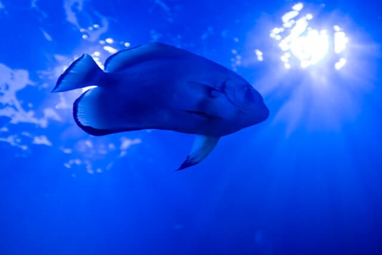
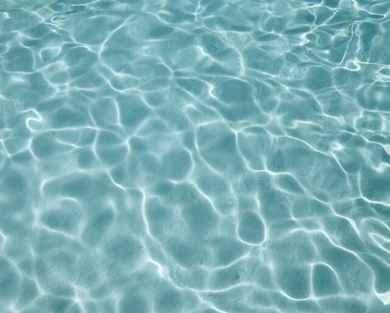
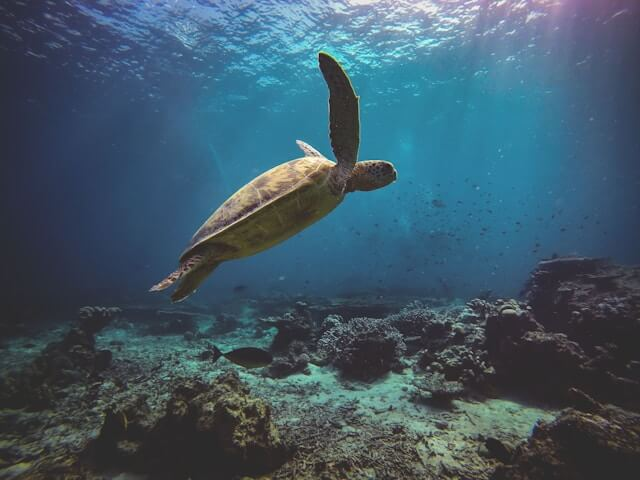
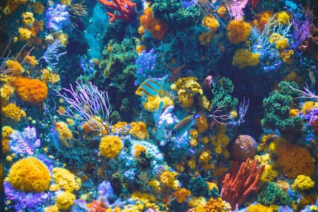
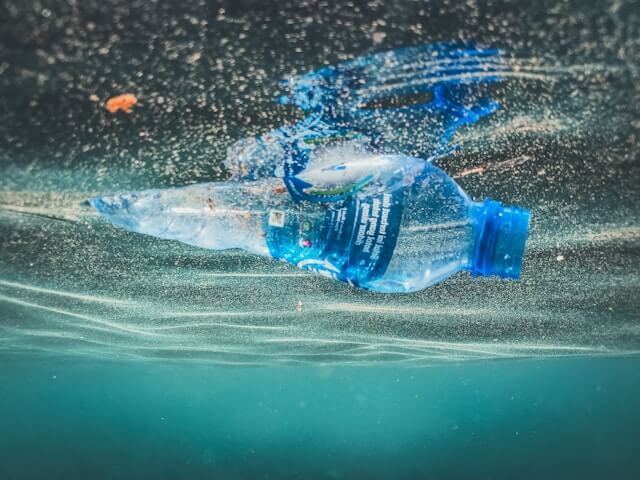
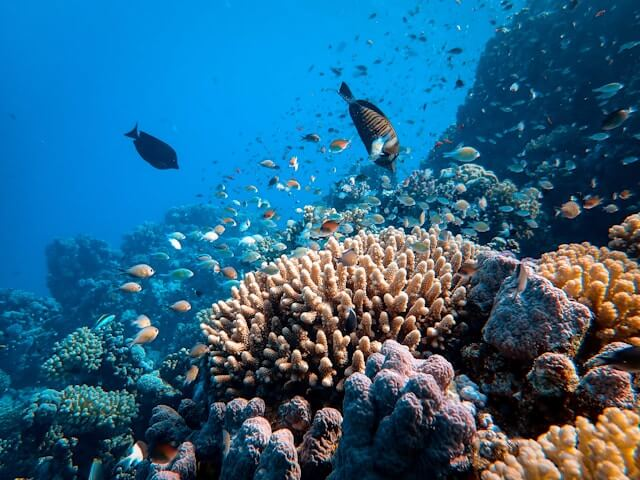
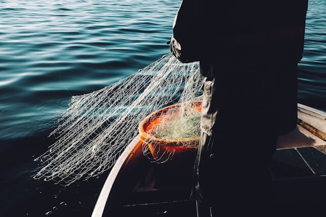
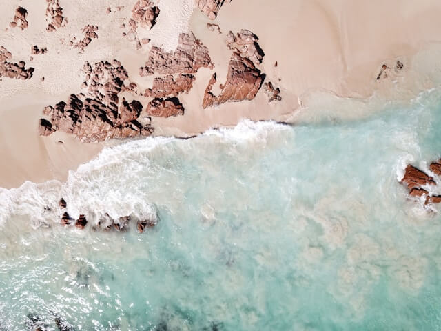
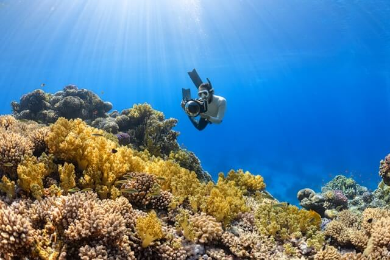

El 50 % del oxígeno viene del mar
Ver MásAbsorbe el 30 % del CO₂ que emitimos
El océano es el principal regulador climático del planeta, pero ese carbono extra lo está volviendo cada vez más ácido.


Metas 2030

Contaminación
Meta 14.1Reducir la contaminación marina
Prevenir y reducir significativamente la contaminación del mar, sobre todo la que viene de actividades en tierra, como los plásticos y el exceso de nutrientes de la agricultura.
Ver Más
Conservación
Meta 14.2Proteger los ecosistemas costeros
Gestionar de forma sostenible los ecosistemas marinos y costeros, fortalecer su resiliencia y restaurar los que ya están degradados para devolverles la salud y la productividad.
Ver Más
Sobrepesca
Meta 14.3Terminar con la sobrepesca
Regular la actividad pesquera y acabar con la pesca excesiva, ilegal y no declarada, aplicando planes con base científica para que las poblaciones de peces puedan recuperarse.
Ver Más
Meta 14.4Conservar áreas marinas protegidas
Proteger al menos el 10 % de las zonas costeras y marinas del planeta, basándose en la mejor información científica disponible y en el marco legal nacional e internacional.
Ver Más
Meta 14.5Más ciencia y tecnología marina
Aumentar el conocimiento científico sobre el mar y transferir tecnología, especialmente hacia los países en desarrollo, para mejorar la salud del océano y aprovechar mejor la biodiversidad marina.
Ver Más